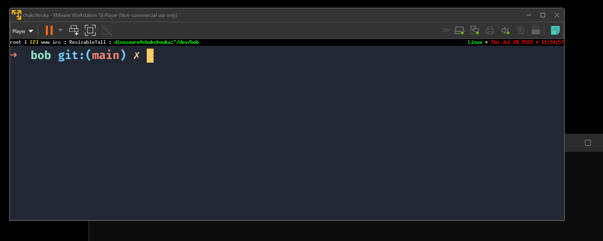

GADTs and state machine
If you follow my blog and my twitter (or my mastodon), you probably have my explanation about the implementation of a Spoke protocol and the development of a new tool: bob
The latter is a tool for sharing files between users. The goal is to have software that can run everywhere thanks to Esperanto.
But in this article, I'm going to talk more precisely about the implementation of the protocol already explained in my previous article on Spoke but I introduces a new concept between peers, that of a relay. The objective is to implement 3 state machines ensuring the good completion of the famouse handshake. And to help me implement these machines, I decided to use GADTs (Generalized Algebraic Data Type).
There are few articles to explain GADTs like the one from Drup which introduces their use to implement a printf (as implemented in OCaml) or the implementation of a simple lambda calculus by Gasche which I had already implemented to create a virtual machine of a typed lambda-calculus as a unikernel for Tweag.io. More generally, Jérémie Yallop's course is just as good for learning and understanding GADTs.
But, in my experiments (thanks especially to Pierre Chambart for giving me the taste to do absurd things with it), I always had the difficulty to really want to do something new and spontaneously use GADTs without falling into the printf/lambda-calculus cases.
But I've always relied on a phrase from Drup: it's by trying to do absurd things with GADTs that you learn how to use them. This may not be the best advise as I really wasted time trying to prove some features (and realising that OCaml's type system was not powerful enough to translate Haskell or simple Coq examples into it) but I kept going and I can now say that I have a little experience with GADTs.
In this and in Bob's case, GADTs came spontaneously as a possible solution to my state machine implementation. This article will explain why and finally show what can be a new use case for GADTs that is not so abstract.
Introduction
The case that often comes up when explaining GADTs is ultimately the implementation of a DSL that restricts you to no being able to construct values without respecting the type relationships you have described. For example, in a small, simple language such as:
type 'a ty =
| Bool : bool t
| Int : int t
type 'a t =
| If_else : bool t * 'a t * 'a t -> 'a t
| Val : 'a ty * 'a -> 'a t
| Equal : 'a t * 'a -> bool t
| Not : bool t -> bool t
It is impossible for us to write this code:
let _ =
If_else (Equal (Val (Int, 0)) (Val (Bool, true)),
(Val (Int, 0)), (Val (Bool, true)))
GADTs introduce so-called existential types for which constraints can be
described. In the If_else constructor, we constrain that the first element
is of type bool t. Subsequently, a type relationship is described between
the term if the test is true and the term if the test is false. This
relationship exists because the same existential type 'a is used in both
values.
Therefore we cannot write If_then _ (Val (Int, 0)) (Val (Bool, true)) as the
first value is of type int t while the second is of type bool t. And of
course, in OCaml int != bool.
However, for a pragmatic person like me, the use remains very limited. In the
printf example, we could stop with these explanations since we would only be
using this DSL in OCaml1. However, there are situations
where what can build our values is not the OCaml developer (as with printf)
but a user input.
string to a GADT
describing what to display. Indeed, for printf "%a", OCaml parses "%a" into
a GADT before compiling (and type-checking) the actual code.
This may be the case for a lambda-calculus. Instead of describing its program in OCaml directly, we could write it to a file, parse the file, extract an AST in the form of an ADT and then transform it into a GADT:
type ast =
| If_else of ast * ast * ast
| Val of value
| Equal of ast * ast
| Not of ast
type expr = Expr : 'a t * 'a ty -> expr
val parse : in_channel -> ast
val typ : ast -> expr
The last step is ultimately the most difficult as it consists of "proving" situations where there is an equivalence between your ADT and your GADT. This is also implies that there are bound to be nonsense situations like our example above.
Indeed, this is an example that can be written (and is syntactically valid:
if _ then 0 else true) and that there is therefore an ADT corresponding to
this term but which is still invalid from the point of view of the GADT.
let rec typ = function
| Val (Bool v) -> Expr (Val (Bool, v), Bool)
| Val (Int v) -> Expr (Val (Int, v), Int)
| If_else (t, a, b) ->
( match typ t, typ a, typ b with
| Expr (t', Bool), Expr (a', ta), Expr (b', tb) ->
Expr (If_else (t', a', b'), ta)
(* XXX(dinosaure): impossible to write because we did not prove that
[ta = tb] (and the case [ta = int] and [tb = bool]) still exists. *)
| _ -> ... )
This is where you have to prove that 'ta = 'tb. And that's where the
aptly-named refl comes in:
type ('a, 'b) refl = Refl : ('a, 'a) refl
This constructor can only exist if there is an equivalence between 'a and
'b. In this sense, we can write:
let ty_equal
: type a b. a ty -> b ty -> (a, b) refl option
= fun a b -> match a, b with
| Int, Int -> Some Refl
| Bool, Bool -> Some Refl
| _ -> None
And we can finally prove that the first term of our If_else has the same type
as our second term:
( match typ t, typ a, typ b with
| Expr (t', Bool), Expr (a', ta), Expr (b', tb) ->
( match ty_equal ta tb with
| Some Refl (* comes with 'ta = 'tb constraint *) ->
Expr (If_else (t', a', b'), ta)
| None -> (* typing error *) ) )
This little introduction shows an essential point in understanding GADTs: they do not "magically" remove impossible cases, GADTs force us not to be able to construct absurd values according to our rules but delegates the handling of errors (like our type error above) upstream (when we switch between ADT and GADT).
GADTs become interesting when it comes to "evaluating"/introspecting a value constructed with them. In this situation, since we will have already cleaned up all the nonsense cases (with the help of the compiler), only the situation that make sense (in the terms of our constraints) can be deconstructed and manipulated:
let rec eval : type a. a t -> a = function
| If_else (test, a, b) ->
if eval test
then eval a else eval b
(* We already sure that they return the same type. *)
| Val (_, v) -> v
| Equal (a, b) -> eval a = eval b
| Not t -> not (eval t)
Protocol & Duality
The use of GADTs is based on constraints that are true the way through when you want to look at what they represent. In this sense, it is always difficult to pull a use of GADTs out of a hat without first considering our use in its entirety.
And yet, in some situations, we know that there are absolute rules within which we are sure never to overstep. The central question remains: are our impossible cases worth a GADT?
A few assert false here and there without being able to deduce a fundamental
rule means that the use of GADTs can become a pain that often leads to nothing.
However. there are times when we can recognise fundamental rules such as the
equivalence of types in our lambda-calculus.
In the case of protocol implementation, the fundamental rule is called duality between server and client: if the client sends a packet, the server receives a packet & if the server sends a packet, the client receives a packet.
type ('a, 'r) send = Send
type ('a, 'r) recv = Recv
type close = Close
type ('c, 's) dual =
| Server_to_client : ('c, 's) dual -> (('a, 'c) recv, ('a, 's) send) dual
| Client_to_server : ('c, 's) dual -> (('a, 'c) send, ('a, 's) recv) dual
| Close : (close, close) dual
But back to bob. This form of duality exists even if it is less abstract -
but sufficient for our purposes.
The relay
To stabilise the connection between two peers during a file transfer, we have opted to implement a relay between peers. Of course, and this is the most important point, the relay would be "blind" during the direct transmission from one peer to another, our handshake.
Nevertheless, the relay acts as an arbiter on certain points such as the identity of these peers. Indeed, it is not up to the peers to define their identities (which is part of the handshake) but to the relay to do so.
If we go back to our described protocol, we define 2 roles during the handshake and even more so, during the exchange of a file: we have a sender and a receiver. There are finally 3 roles in our protocol: the relay, a peer wanting to send a file, a peer wanting to receive a file.
From these 3 roles, we can deduce some obvious but fundamental rules concerning our protocol:
- a relay can talk to a sender or receiver but cannot talk to another relay
- a sender can talk to a receiver or the relay but cannot talk to another sender
- a receiver can talk to a sender or the relay but cannot talk to another receiver
If you have understood this little explanation, we find the principle of duality. It is not established in the form of sending/receiving according to the role of server/client (like the example above) but rather in the form of who should talk to whom. We are still talking about duality because knowing the target of "a packet" implies knowing its source: it is because I know that the packet comes from a sender that its destination is either the relay or a receiver - and vice versa.
These rules become particularly interesting for the relay which can receive and send packets to senders and receivers. Of course, it knows the identity and role of each - and it is at this point that it should be impossible for us to retransmit (and thus reconstruct) a packet from one sender to another sender as the relay.
The Bob Protocol
We'll just give a quick reminder of the protocol that has been extended. An introduction of the peers to the relay is required so that the peers define their roles (sender or receiver) and the relay passes on their identity.
As for the sender, in addition to defining itself as a sender to the relay, it transmits the salt corresponding to the first packet to be exchanged during our handshake. The relay will then notify all available receivers of the existence of the new senders with their respective salts.
Finally, a real communication between receivers and senders is initiated with the exchange of X, Y, identities and validators.
The "Agreement" packet signals the end of our handshake, the sender and the receiver have agreed on their identities and passwords. Nevertheless, we decided to extend the protocol by a human action of the receiver who accepts or refuses such an agreement.
Here is a condensed version of this explanation:
sender === Hello_as_sender ==> relay
sender <== Sender_identity === relay
recver === Hello_as_recver ==> relay
recver <== Recver_identity === relay
relay ==== New_sender ===> receiver
sender <=== X_and_recver_identity ==== receiver
sender ==== Y_and_sender_validator ===> receiver
sender <=== Recv_validator ==== receiver
sender ==== Agreement ===> receiver
sender <=== Accepted ==== receiver
| Or Refused
relay ==== Done ===> receiver
In concrete terms, each packet has its real destination listed. In fact, in
reality, all packets will go to the relay and it is up to the relay to
"dispatch" the packets to the right destination. A unique ID is therefore
associated with each receiver and sender. The unique ID 0000 concerns the
relay. This is how receivers and senders can communicate directly via the
relay.
This last type of transmission (which, after all, concerns almost all our handshake) should only be the responsibility of the peers. That is, when transmitting a packet from one peer to another, the relay should not introspect/modify said packet and just retransmit it as long as our previous rules, i.e a sender can only talk to a receiver and vice-versa, are respected.
The GADT
From all these explanations, we can begin to define our GADTs. What is most important for us here is to encode the roles and define our packets with the emitter role and the receiver role.
type sender = |
type recver = |
type relay = |
type ('from, 'to) packet =
| Hello_as_a_sender : (sender, relay) packet
| Sender_identity : (relay, sender) packet
| Hello_as_a_recver : (recver, relay) packet
| Recver_identity : (relay, recver) packet
| New_sender : (relay, recver) packet
| X_and_recver_identity : (recver, sender) packet
| Y_and_sender_validator : (sender, recver) packet
| Recv_validator : (recver, sender) packet
| Agreement : (sender, recver) packet
| Accepted : (recver, sender) packet
| Refused : (recver, sender) packet
We will finally encode the principle of duality in these termes: being a
receiver, my opposite/dual is a sender and vice-versa. So we will have a type
such as: type ('role, 'non_role) peer.
type ('role, 'non_role) peer =
| Sender : (sender, recver) peer
| Recver : (recver, sender) peer
Finally, as we have explained, a packet also contains its destination from
which we can deduce the role of the receiver and the same applies to the role
of the sender. The relay, on the other hand, has both knowledge of the sender
and the receiver of the packet. We are therefore going to encode, still with
GADTs, a means of recognising the role of the source or the recipient of a
packet - if the role is a receiver/sender, we will associate its unique ID as
an int:
type ('from, 'to) src =
| Relay : (relay, 'to) src
| Peer : ('from, 'non_from) peer * int -> ('from, 'non_from) src
type ('from, 'to) dst =
| Relay : ('from, relay) dst
| Peer : ('to, 'non_to) peer * int -> ('non_to, 'to) dst
Finally, we "wrap" our types together where we describe our type relationships
well. For now, we'll focus on what our peers handle, namely, packets from a
certain source (depending on the peer's role) and the sending of packets to
a particular destination (the 'non_role or the relay):
type src_rel =
| Sender_packet : ('from, sender) src * ('from, sender) packet -> src_rel
| Recver_packet : ('from, recver) src * ('from, recver) packet -> src_rel
type 'from send =
| Send_to : ('from, 'to) dst * ('from, 'to) packet -> 'from send
The state machine
The implementation of a state machine for our purposes is very simple. It consists of 2 functions that handles incoming packets and a second function that returns packets that should be sent. These two functions share the same state, which makes it possible to execute functions concurrently. The function handling the packets will be the one that will tell us if the handshake is finished or not.
module Recver : sig
type state
val process_packet
: type from. state -> (from, recver) src -> (from, recver) packet ->
[ `Continue | `Done | `Close ]
val next_packet : state -> recver send option
end
module Sender : sig
type state
val process_packet
: type from. state -> (from, sender) src -> (from, sender) packet ->
[ `Continue | `Done | `Close ]
val next_packet : state -> sender send option
end
At this stage, there is still no mention of scheduling or I/O. We are only interested in what the reception of packets means for our state and whether we should send new packets.
A specialisation of roles in the types can be seen. This specialisation seems
fair, as process_packet should only handle packets destined for the role it
is given (recver or sender). The next_packet should only be able to emit
packets whose origin is of course related to its role.
More concretely, it allows:
- to have an exhaustive pattern-matching in
process_packetcorresponding to its role - to be able to build and send packages only if our role allows it
The sender state machine
Thanks to our constraints, the implementation of the machines will be spontaneous in the sense that the pattern-matching will only take care of what is valid - but let's not forget that, necessarily, a step exists before to remove the absurd cases! In this, we can really concentrate on the implementation of our state machine and so we will start with the sender:
let send_to
: type from to. (from, to) dst -> (from, to) packet -> from send Queue.t -> unit
= fun dst packet queue -> Queue.push (Send_to (dst, packet)) queue
let to_sender
: uid:int -> (recver, sender) dst
= fun ~uid -> Peer (Sender, uid)
let to_recver
: uid:int -> (sender, recver) dst
= fun ~uid -> Peer (Recver, uid)
let to_relay : (_, relay) dst = Relay
type state =
{ secret : Spoke.secret
; mutable identity : string
; recvers : (int, Spoke.server * string) Hashtbl.t
; queue : sender send Queue.t
; mutable sk : Spoke.shared_keys option }
let make ~secret =
let t = { secret
; identity= ""
; recver= Hashtbl.create 0x10
; sk= None
; queue= Queue.create () } in
let public = Spoke.public_of_secret secret in
send_to to_relay (Hello_as_a_sender { public }) t.queue ;
t
let process_packet
: type from. state -> (from, sender) src -> (from, sender) packet ->
[ `Continue | `Done | `Close ]
= fun state source packet -> match source, packet with
| Relay, Sender_identity identity ->
state.identity <- identity ; `Continue
| Peer (Recver, uid), X_and_recver_identity { _X; recver_identity; } ->
( match Spoke.server_compute ~secret:state.secret
~identity:(recver_identity, state.identity) _X with
| Ok (server, (_Y, sender_validator)) ->
Hashtbl.add t.recvers uid (server, recver_identity) ;
let packet = Y_and_sender_validator { _Y; sender_validator; } in
send_to (to_recver ~uid) packet state.queue;
`Continue
| Error _ -> `Continue )
| Peer (Recver, uid), Recv_validator recv_validator ->
( match Hashtbl.find_opt t.recvers uid with
| None -> `Continue
| Some (server, _) ->
match Spoke.server_finalize ~server recv_validator with
| Ok sk ->
state.sk <- Some sk ;
send_to (to_recver ~uid) Agreement state.queue ;
`Continue
| Error _ -> `Continue )
| Peer (Recver, uid), Accepted ->
( match state.sk with
| Some sk -> `Done
| None -> `Continue )
| Peer (Recver, uid), Refused ->
state.sk <- None ;
Hashtbl.remove t.recver uid ;
`Continue
let next_packet state = Queue.take_opt state.queue
As we can see, the pattern-matching is quite exhaustive in case our role is
that of the sender. We can only handle packets destined for the sender and
we can only build (and then send) packets that only the sender can send - a
send_to _ Hello_as_recver would end in a type error.
The receiver state machine
Of course, the same can be done for the receiver by specialising the types with our other role. We could even just compile our code and follow the compiler's complaints to help us handle the valid cases one by one:
type state =
{ password : string
; mutable identity : string
; senders : (int, Spoke.client * string) Hashtbl.t
; mutable sk : Spoke.shared_keys option
; queue : recver send Queue.t
; choose : string -> bool }
let make ~choose ~password =
let t = { password
; identity= ""
; senders= Hashtbl.create 0x10
; sk= None
; queue= Queue.create ()
; choose } in
send_to to_relay Hello_as_a_recver t.queue ;
t
let process_packet
: type from. state -> (from, recver) src -> (from, recver) packet ->
[ `Continue | `Done | `Close ]
= fun state source packet -> match source, packet with
| Relay, Recver_identity identity ->
state.identity <- identity ; `Continue
| Relay, New_server { uid; public; sender_identity; } ->
( match Spoke.hello ~public state.password with
| Ok (client, _X) ->
Hashtbl.add t.senders uid (client, sender_identity) ;
let packet = X_and_recver_identity { _X; recver_identity= state.identity; } in
send_to (to_sender ~uid) packet t.queue ;
`Continue
| _ -> `Continue )
| Peer (Sender, uid), Y_and_sender_validator { _Y; sender_validator; } ->
( match Hashtbl.find_opt t.senders uid with
| None -> `Continue
| Some (recver, sender_identity) ->
match Spoke.client_compute ~client
~identity:(t.identity, sender_identity) _Y with
| Ok (sk, recv_validator) ->
t.sk <- Some sk ;
let packet = Recv_validator recv_validator in
send_to (to_sender ~uid) packet t.queue ;
`Continue
| Error _ -> `Continue )
| Peer (Sender, uid), Agreement ->
( match t.sk with
| None -> `Continue
| Some sk ->
let _, sender_identity = Hashtbl.find t.senders uid in
match choose sender_identity with
| true -> send_to (to_sender ~uid) Accepted t.queue ; `Continue
| false ->
t.sk <- None ;
Hashtbl.remove t.senders uid ;
send_to (to_sender ~uid) Refused t.queue ; `Continue )
| Relay, Done ->
( match t.sk with
| Some sk -> `Done
| None -> `Continue )
let next_packet state = Queue.take_opt state.queue
Et voilà! As you can see, once again, you just have to follow the rules we have described - in other words, trust your compiler and follow its advice!
An impure world
However, we still miss the step where we have to build our GADTs from a type in
which these constraints do not exist (yet!). As with our lambda-calculus, this
ADT is equivalent (without the constraints) to our packet GADT.
To make our lives easier, we will directly use a polymorphic variant.
The objective here is to try to create a src_rel value containing our famous
relationships. Let's not forget 3 details:
- we know what role we have
- since we know our role, we can deduce the role of the packet sender (the dual/opposite of our role)
- a special case exists for the relay whose unique ID is
0000
let src_and_packet uid packet = match uid, packet with
| 00, `Sender_identity sender_identity ->
Sender_packet (Relay, Sender_identity sender_identity)
| 00, `Recver_identity recver_identity ->
Recver_packet (Relay, Recver_identity recver_identity)
| 00, `New_server (uid, public, sender_identity) ->
Recver_packet (Relay, New_server { uid; public; sender_identity; })
| 00, `Done ->
Recver_packet (Relay, Done)
| uid, `X_and_recver_identity (_X, recver_identity) ->
Sender_packet (Peer (Recver, uid), X_and_recver_identity { _X; recver_identity; })
| uid, `Y_and_sender_validator (_Y, sender_validator) ->
Recver_packet (Peer (Sender, uid), Y_and_sender_validator { _Y; sender_validatorl })
| uid, `Recv_validator recv_validator ->
Sender_packet (Peer (Recver, uid), Recv_validator recv_validator)
| uid, `Agreement ->
Recver_packet (Peer (Sender, uid), Agreement)
| uid, `Accepted ->
Recver_packet (Peer (Recver, uid), Accepted)
| uid, `Refused ->
Recver_packet (Peer (Recver, uid), Refused)
| _ -> failwith "Invalid packet"
let recver_process_packet state uid packet =
match src_and_packet uid packet with
| Recver_packet (src, packet) ->
Recver.process_packet state src packet
| _ -> failwith "Roles mismatches between receiver and packet"
let sender_process_packet state uid packet =
match src_and_packet uid packet with
| Sender_packer (src, packet) ->
Sender.process_packet state src packet
| _ -> failwith "Roles mismatches between sender and packet"
As can be seen, the "mapping" remains quite simple and the absurd cases are still quite obvious. At this stage, as far as the peer state machines are concerned, we have done the hardest work. All that remains is to implement a new layer that deals with parsing a stream of bytes into packets - but we won't explain that here.
The state machine of the relay
However, there is still the implementation of the relay. The latter actually has 4 goals:
- it is the authority that issues and assigns unique identities to our peers
- it is the one that informs the receivers of the arrival of new senders (see
New_serverpacket) - it forwards packets from peer to peer according to the unique IDs written in the packets - without observing/deconstructing/introspecting the contents of these packets
- finally, it is the one that closes (with the
Donepacket) the handshake
The last is important since the final goal of the relay is to allocate a secure
room to allow communication between peers with their shared keys. This means
that the relay will still introspect 2 packets: Accepted & Refused. And it
is indeed the reception of the first one retransmitted to the sender that the
relay confirms the agreement by sending back to the receiver the Done packet.
Finally, the relay has a different modus operandi than the peers. It does not
only send or receive packets, it also retransmits them. Its behavior depends
not only on the source ('from, 'to) src of the packet (as for our peers) but
also on its destination ('from, 'to) dst. So we have a new type that will
link the type parameters of ('from, 'to) src and ('from, 'to) dst:
type ('from, 'non_from, 'to) transmit =
| Blind : ('from, 'to, 'to) transmit
| From_recver : (recver, sender, relay) transmit
| From_sender : (sender, recver, relay) transmit
Here, 3 cases are described:
- the case of retransmitting a packet from one peer to another. Note that, of
course, you want to retransmit to the dual/opposite of
'from - the case where the receiver wants to send a packet to the relay. The dual/opposite of the receiver must be specified even if the destination of the packet is the relay
- finally the case where the sender wants to send a packet to the relay
Finally, we need to separate the case where we want to send a packet to a peer
in the role of the relay (as for {Sender,Recver}_identity packets) or in the
role of the source of the packet when it comes relaying:
type 'from send_relay =
| Respond : (_, 'to) dst * (relay, 'to) packet -> relay send_relay
| Transmit : ('from, 'to) src * ('from, 'to) dst * ('from, 'to) packet -> relay send_relay
With all this, we can implement our process_packet function for the relay:
let respond dst packet queue = Queue.push (Respond (dst, packet)) queue
let transmit ~src ~dst packet queue = Queue.push (Transmit (src, dst, packet)) queue
let process_packet
: type x y z.
src_identity:string ->
state -> (x, y) src -> (x, y, z) transmit -> (y, z) dst -> (y, z) packet ->
[ `Continue | `Agreement ]
= fun ~src_identity state src link dst packet ->
match src, link, dst, packet with
| Peer (Recver, uid), From_recver, Relay, Hello_as_a_recver ->
respond (to_recver ~uid) (Recver_identity src_identity) t.queue ;
Hashtbl.iter begin fun sender_uid (sender_identity, public) ->
let packet = New_sender { uid= sender_uid; public; sender_identity; } in
respond (to_recver ~uid) packet t.queue end t.senders ;
`Continue
| Peer (Sender, uid), From_sender, Relay, Hello_as_a_sender { public } ->
respond (to_sender ~uid) (Sender_identity src_identity) t.queue ;
Hashtbl.iter begin fun client_uid client_identity ->
let packet = New_sender { uid; public; sender_identity= src_identity; } in
respond (to_recver ~uid:recver_uid) packet t.queue end t.clients ;
`Continue
| Peer (Recver, from_uid), Blind
Peer (Sender, to_uid), Accepted ->
send_to (to_recver ~uid:from_uid) Done state.queue ;
transmit ~src ~dst packet state.queue ;
`Agreement
| Peer (Recver, from_uid), Blind
Peer (Sender, to_uid), Refused ->
remove_candidates ~src ~dst state ;
transmit ~src ~dst packet state.queue ;
`Continue
| src, Blind, dst, packet ->
transmit ~src ~dst packet t.queue ;
`Continue
let send_packet state = Queue.take_opt state.queue
We can see our 4 goals given above with regard to our relay. The assignment of
identities (src_identity should come from Unix.getpeername) as well as the
broadcast of available senders. We also see the retransmission in the Blind
case as well as the introspection of Accepted/Refused to know if we should
send Done or not.
What this implementation shows that I think is very imporant is the Blind
case, which shows that the relay should not collect information that might
infringe on the privacy of the peers - of course, even if a relay could
collect this information, it would not, a priori, be able to infer the password
shared between the peers (since the latter is never transmited into the pipe).
More generally, the use of GADTs in relation to our relay provides more
informations about the relationships between src, dst and packet. In this
way, we don't have to check anything more than what we are given in the Blind
case - namely, that src is the dual/opposite of dst and that the packet
type parameters match src/'from and dst/'to.
We fall back into the situation of the eval for our lambda-calculus where
the value of our If_else, although abstract, do have the same type and so we
can write this without type error:
let rec eval : type a. a t -> a = function
| If_else (test, a, b) ->
if eval test
then eval a else eval b
(* We already sure that they return the same type. *)
| _ -> ...
Plug the world!
Again, we need a function that turns a packet with no type relationshops into a
value with our type relationships in the same way as src_rel. Indeed, we
need to create a new type dst_rel. Remember that the relay receives packets
whose destination is listed.
Finally, the relay also has the ability to recognise the source of the packet and more importantly the role of that source! So we have to create our type relations in two phases:
- a first one which consists in defining the relations between the packet
and the type
dst - a second phase which consists in inferring
src
type dst_rel =
| Relay_packet : ('a, 'b) dst * ('a, 'b) packet -> dst_rel
type exists =
| Exists : ('f, 't) peer * ('f, 't) src -> exists
| None : exists
It is through these types that we can create the type relationships necessary
for process_packet (see x, y and z).
let dst_and_packet uid packet = match uid, packet with
| 00, `Hello_as_a_sender public ->
Relay_packet (Relay, Hello_as_a_sender { public })
| 00, `Hello_as_a_recver ->
Relay_packet (Relay, Hello_as_a_client)
| uid, `Recver_validator validator ->
Relay_packet (Peer (Sender, uid), Recver_validator validator)
| uid, `Y_and_sender_validator (_Y, sender_validator) ->
Relay_packet (Peer (Recver, uid), Y_and_sender_validator { _Y; sender_validator; })
| uid, `X_and_recver_identity (_X, recver_identity) ->
Relay_packet (Peer (Sender, uid), X_and_recver_identity { _X; recver_identity; })
| uid, `Agreement ->
Relay_packet (Peer (Recver, uid), Agreement)
| uid, `Accepted ->
Relay_packet (Peer (Sender, uid), Accepted)
| uid, `Refused ->
Relay_packet (Peer (Sender, uid), Refused)
| _ -> failwith "Invalid packet"
let process_packet
: type from to.
state -> src_identity:string -> (from, to) dst -> (from, to) packet ->
[ `Continue | `Agreement ]
= fun state ~src_identity dst packet ->
let src = match Hashtbl.find_opt state.uids src_identity with
| Some (`Recver uid) -> Exists (Recver, Peer (Recver, uid))
| Some (`Sender uid) -> Exists (Sender, Peer (Sender, uid))
| None -> None in
match src, dst, packet with
| Exists (Recver, src), (Peer (Sender, _) as dst), packet ->
process_packet state ~src_identity src Blind dst packet
| Exists (Sender, src), (Peer (Recver, _) as dst), packet ->
process_packet state ~src_identity src Blind dst packet
| None, Relay, Hello_as_a_recver ->
let uid = gen () in
let src : _ src = Peer (Recver, uid) in
Hashtbl.replace state.uids src_identity (`Recver uid) ;
process_packet state ~src_identity src From_recver dst Hello_as_a_client
| None, Relay, (Hello_as_a_sender _ as packet) ->
let uid = gen () in
let src : _ src = Peer (Sender, uid) in
Hashtbl.replace state.uids src_identity (`Sender uid) ;
process_packet state ~src_identity src From_sender dst packet
| _ -> failwith "Invalid packet"
let process_packet ~src_identity state uid packet =
let Relay_packet (dst, packet) = dst_and_packet uid packet in
process_packet state ~src_identity dst packet
Et voilà! We have our 3 state machines for our peers (sender and receiver) as well as for our relay! The duality rule introduced from the beginning is general enough not to prevent the extension of the protocol.
There are however several points to clarify. It may happen that the OCaml compiler cannot really prove the completeness of our pattern-matching. This is partly due to "nested" constructors - the compiler has to look at the values of some of our GADTs to prove some impossible cases. For our last machine, we can talk about this case:
match src, dst, packet with
| Exists (_, Relay), _, _ -> .
As you can see, we can define the branch and use the . to disprove the case.
The case is not possible because the Relay constructor constraints some
existential types as (relay, 'to) src and our peer type never defines
a constructor with the role relay (it defines only two roles
Sender/sender & Recver/recver) and we explicitely defined a type
relationship between 'from from src and 'from from peer.
type ('role, 'non_role) peer =
| Sender : (sender, recver) peer
| Recver : (recver, sender) peer
type ('from, 'to) src =
| Relay : (relay, 'to) src
| Peer : ('from, 'non_from) peer * int -> ('from, 'non_from) src
type exists =
| Exists : ('from, 'to) peer * ('from, 'to) src -> exists
Another point concerns the protocol itself which, in practice, contains a few
more packets than we have just seen. We can mention in particular the
Timeout packet or the Spoke_error packet (to signal a handshake error).
More generally, the above codes remain above all idiomatic. The implementations are a bit more complicated but globally, the use of the duality principle and the design of GADTs has been done in this sense. So don't be afraid if the code doesn't work directly.
Bob, a little introduction
After an introduction of Bob's heart, we can discuss the project itself! Another part, just as technical, remains to be explained but this will be done in another article.
Bob is still a small program whose objective is accessibility. It was
Armael who launched me (unknowingly) on this project when we wanted
to share a unikernel built with builds.robur.coop. He then
advised me to use croc and when I installed it I thought that such
a software could take advantage of Cosmopolitan and be available everywhere as
a polyglot executable.
After several researches which led to Spoke and our article on the creation of a cryptographic protocol, I became certain that Bob was becoming a more and more interesting software in its use but also in its design. This is also the occasion to use MirageOS to propose a relay as unikernel (which is now running since a few weeks!).
In short, Bob is already available and usable even if the release has not yet been made - it is making us implement tests now. You can download it from the GitHub Actions repository where we systematically compile the program with Cosmopolitan.
It's still quite simple to use2: 
On Windows, drag'n and drop a file to bob.com works to send a file and double
clicking on bob.com to receive also works - you don't have to be a computer
expert to use Bob!
zsh < 5.9, a bug persists. The shell does not
recognize bob.com as an executable. The user can assimilate the binary with
sh -c "./bob.com --assimilate". By this way, bob.com is assimilated into
your local host format.
An other situation can appear with binfmt_misc where your shell wants to
execute bob.com as a Wine application. For such case, Cosmopolitan provides
an installer which fills binfmt_misc with the APE
format.
Conclusion
We'll probably do a release of Bob in September after the holidays to polish up the whole distribution - and may be ensure reproducibility of the executable thanks to the excellent work of Hannes and robur.io.
The goal is ultimately simple, to make sure that everyone can share files on all platforms without any prerequisites. But the project is still fundamentally useful. Thanks to robur.io for giving me the time to experiment and go further on topics I'm passionate about - and if you think what we're doing is fun and useful, you can of course contribute financially to what we're doing.
I hope this article shows another aspect of GADTs that is outside the
printf/lambda-calculus box. I also hope that it shows our artisanal
methodology which finally adds a little more human touch to these little
programs.